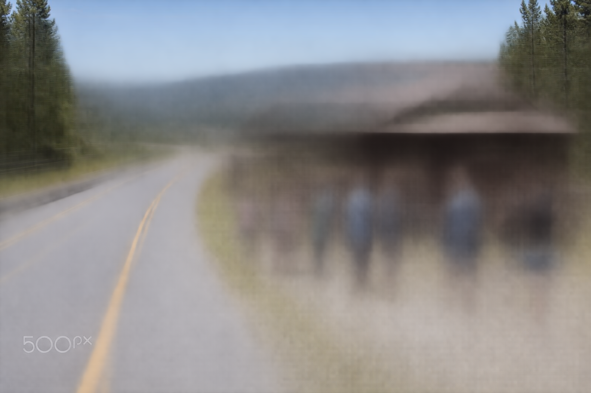
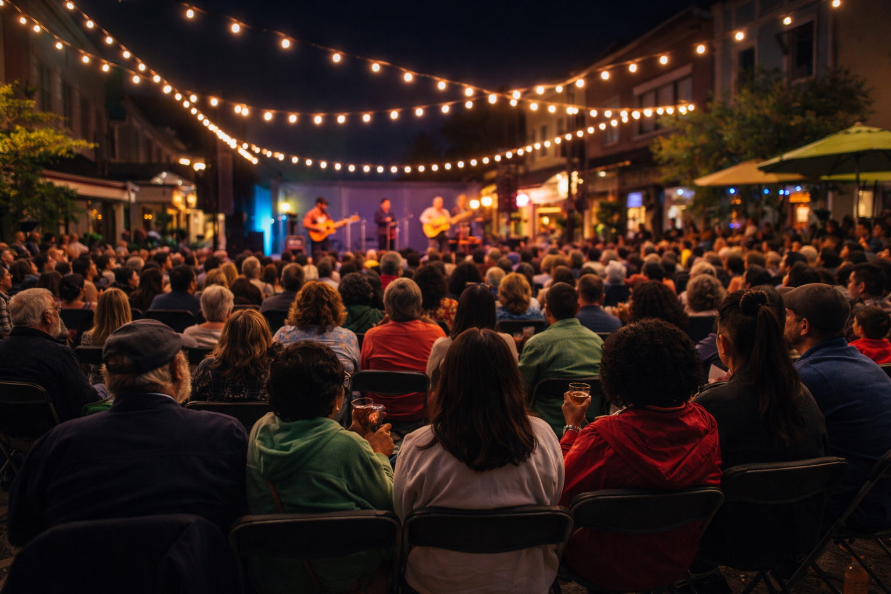
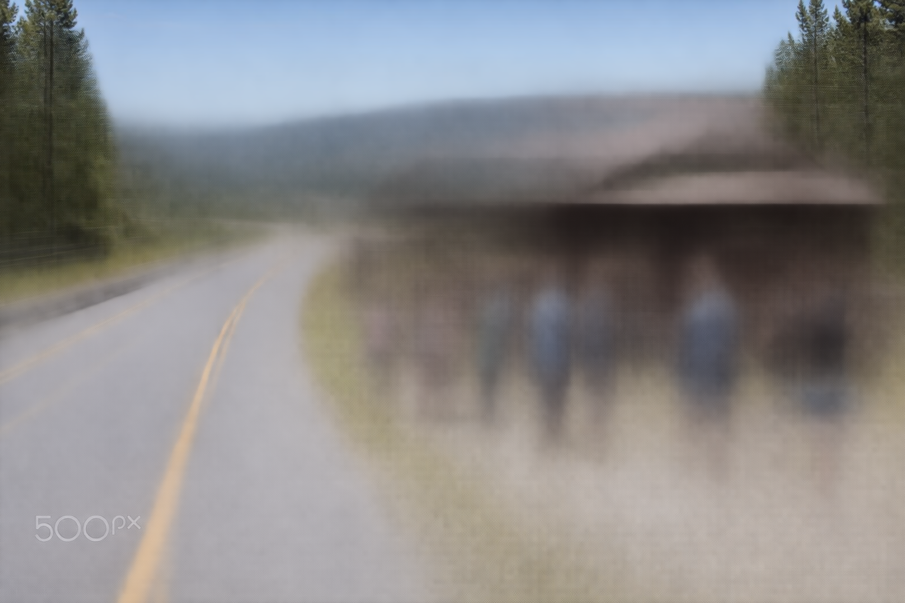
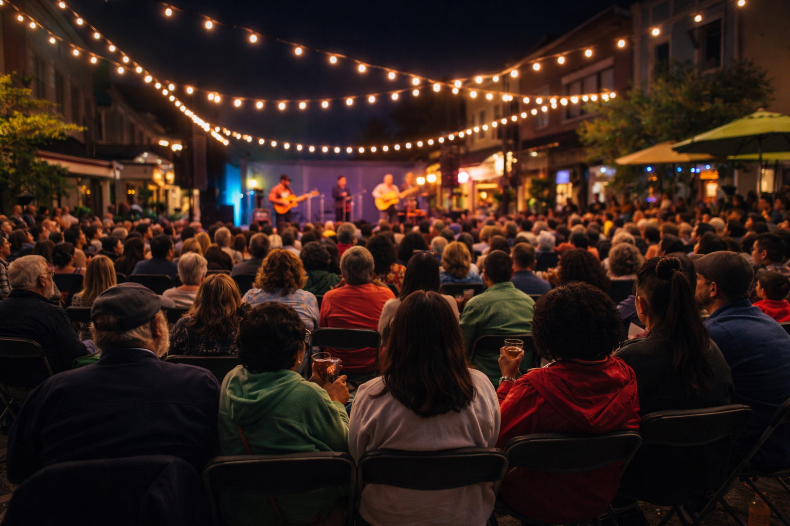

Nevada County Cultural District
Your Guide
to Local
Culture
to Local
Culture
Open an editorial, then use the "Places in this story" links to jump straight to markers on the map.
Highways 49, 20, and 40—each with its own distinct heritage—form a network that connects the county’s vibrant California Cultural Districts and historic landmarks, while offering breathtaking views of rolling foothills, towering pines, and High Sierra vistas.
Before Interstate 80 sped travelers through the Sierra, there was “Old Highway 40”—part of America’s first transcontinental road. Ancient petroglyphs near Donner Summit, etched into granite thousands of years ago by the Martis People, offer a glimpse into the lives of the region’s earliest inhabitants.
From Clair Tappan Lodge to Rainbow Lodge, and the “20 Mile Museum” from Donner Lake to Cisco Grove, every curve tells a story of migration, innovation, and the spirit of the Sierra.
Stretching east to west, Highway 20 traces its roots to the 19th-century California Trail. The historic Washington Hotel, built in 1857, continues to serve as the community hub. Further south is Rough and Ready, founded in 1849—its mining heritage lives on in street names like Tornado, Gamble, and To Hell and Back Lane.
The Golden Chain Highway links historic Gold Rush towns. Empire Mine State Historic Park in Grass Valley is one of the oldest, deepest, and richest gold mines in California. On the San Juan Ridge, the North Columbia Schoolhouse Cultural Center—a restored 1875 schoolhouse built by miners for their children—now hosts the internationally renowned Sierra Storytelling Festival.
Our cultural richness is a reflection of the Nisenan and Washoe Peoples, whose traditions and enduring presence continue to shape our region. That richness is also carried forth by visionaries like Pulitzer Prize–winning poet Gary Snyder, whose arrival in the 1960s helped seed a generation of creatives.
Drive north on Highway 49 to North Columbia Schoolhouse Cultural Center, and you will feel time slow down. Stop at Mother Truckers for one of its signature t-shirts illustrated by the late Randi Griffin. On arriving at “the Schoolhouse,” you’ll find the Ridge’s cultural epicenter—its walls hold decades of stories, folk music, poetry, and art.
Back in Nevada City, download the Tree Tour in the STORY app and experience heirloom trees planted by Gold Rush horticulturist Felix Gillet. Visit the Crystal Rainbow Rock Shop, Winnie Superette—an Asian market hung with contemporary art—and Communal Café for coffee among locals.
Each June, on trails across Nevada County, stars sway from low branches—the work of artists from Neighborhood Center of the Arts, created for Bear Yuba Land Trust’s Summer Star Hike Challenge. With over 50 miles of trails and 26,000 acres conserved, that’s quite the canvas.
Since 2023, Art in Nature commissions have included Mekdela Maskal’s naturally dyed prayer flags, Peggy Wright’s nest of intertwined debris, and Andres Amador’s “Connections”—a mycelium-like path through fallen trees on Hirschman’s trail. For the Nisenan Gateway at Wildflower Ridge, artist Jenny Hale collaborated with the Nevada City Rancheria Nisenan Tribe to create a willow-and-cedar gateway honoring the land’s original use as a Native trail.
In 2024, Visit Truckee-Tahoe unveiled a new brand: “Mountain Heart. Small Town Soul.”—reflecting a community that is passionate and protective, pioneering and progressive, charming and a little funky. Visitors want to feel like locals, care about leaving a lighter footprint, and prefer scenery over a scene.
For coffee, try Mountain Brew Coffee. For wine with a little funk, visit Truckee River Winery or The Pour House. Downtown galleries—Mountain Arts Collective, Piper J Gallery, Riverside Studios—offer a sampling of the creative talent in the district. And if you’re staying up late, the historic Pastime Club vibrates after hours with pool, shuffleboard, and live entertainment.
Over 680 places to discover across Nevada County, sourced from the Nevada County Arts Council. Last updated December 2024.
Cultural Corridors content adapted from MUSE Issue 03, 2026 — “Our Cultural Corridors” by Jesse Locks. Published by Nevada County Arts Council.
MapLibre GL JS, Turf.js, GSAP. Basemap by MapTiler. Crafted for the Experience Planning Committee.